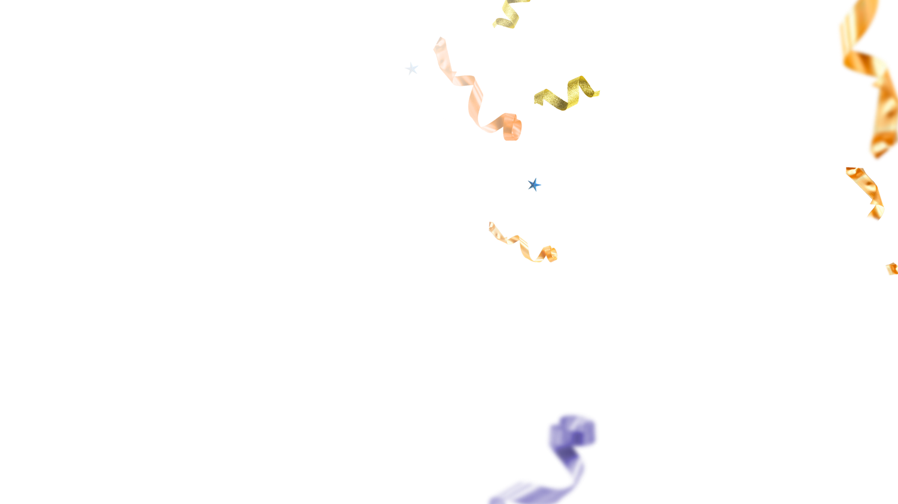
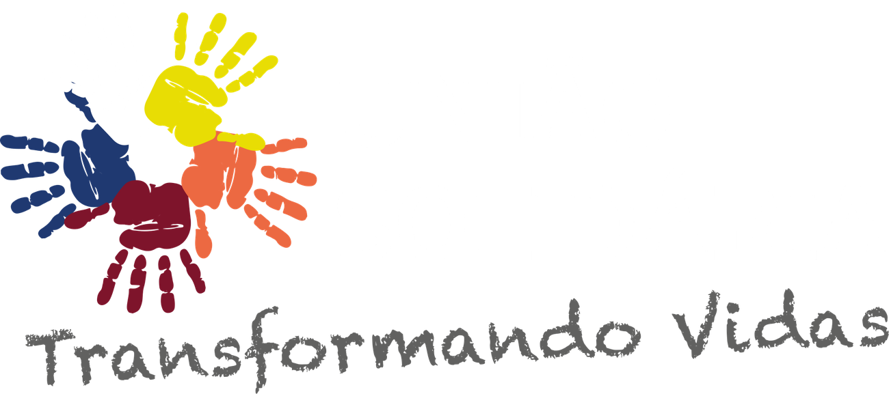
Campanha União Solidária · 10 anosDar força a quem nunca deixa de cuidar.
Influenciadores deixam de ser frente prioritária até haver um novo modelo validado.
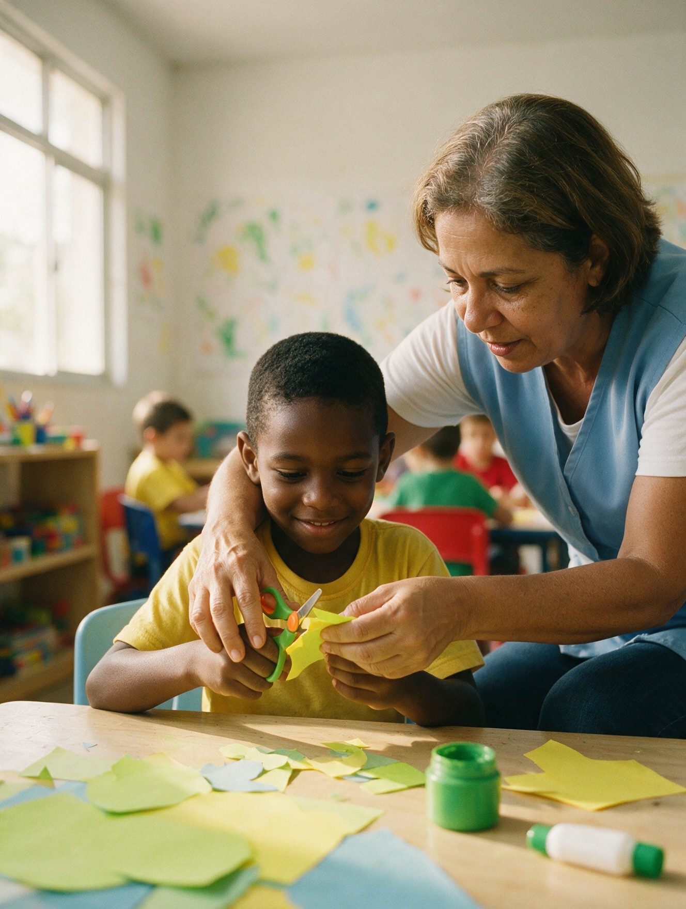
A Campanha União Solidária existe para reconhecer e apoiar as entidades que estão ao lado da comunidade todos os dias. São elas que acolhem, acompanham, orientam e amparam pessoas em momentos difíceis, muitas vezes sem visibilidade e sem o apoio que merecem. Nossa causa é dar força a esse cuidado para que ele continue chegando a quem mais precisa.
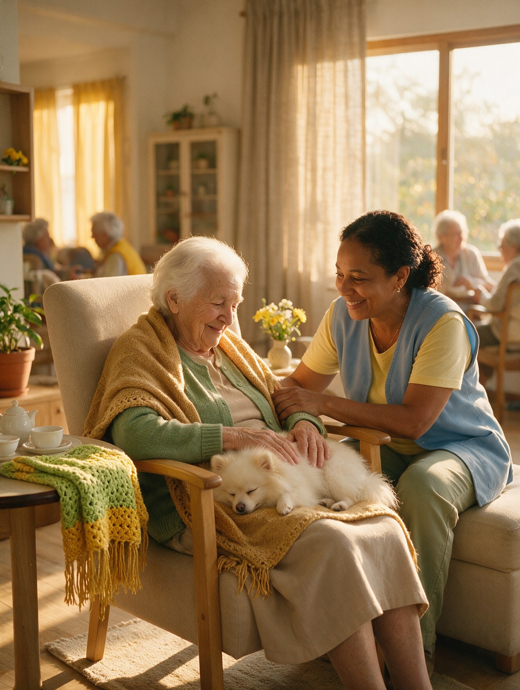
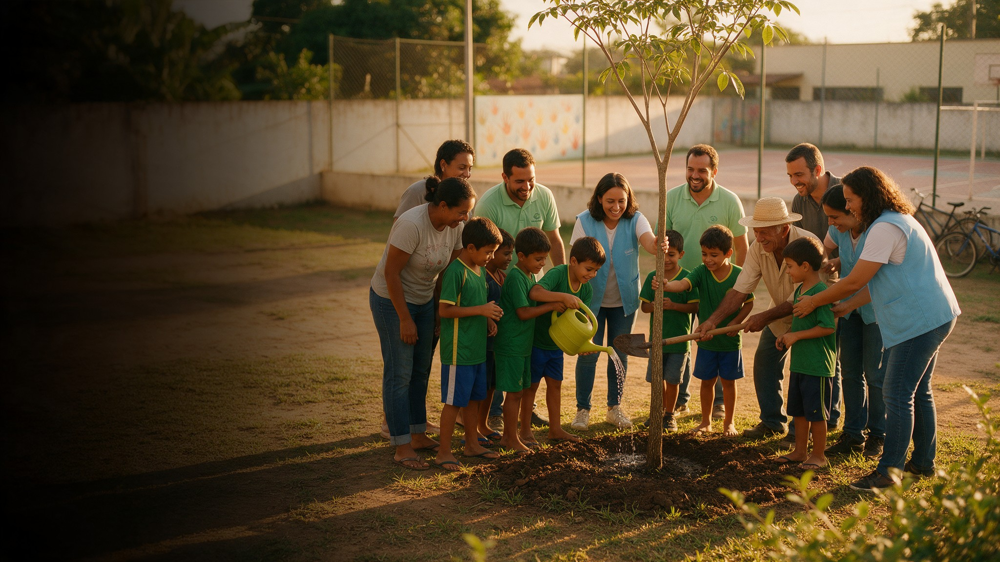
Proposta de valorA Campanha União Solidária aproxima a comunidade, empresas, colaboradores e associados das entidades que já fazem a diferença todos os dias. Ao dar visibilidade a esse cuidado e mobilizar apoio para ampliá-lo, a campanha ajuda essas instituições a seguirem presentes, fortes e capazes de transformar ainda mais vidas.
Sonhamos com comunidades em que nenhuma entidade precise carregar sozinha a responsabilidade de acolher, proteger e sustentar tantas vidas. Um futuro em que esse cuidado diário seja visto, valorizado e apoiado por todos que podem fazer parte dele.
Muitas entidades estão presentes todos os dias na vida de quem mais precisa, mas esse trabalho nem sempre é percebido na sua real dimensão. Falta visibilidade para o cuidado que elas oferecem, falta reconhecimento para sua dedicação e falta apoio para que consigam continuar fazendo o que já fazem tão bem.
Nosso plano é mostrar, com mais verdade e proximidade, o trabalho das entidades, tornando visível o cuidado que elas oferecem à comunidade. A campanha existe para conectar esse esforço diário ao apoio da sociedade, ampliando reconhecimento, participação e arrecadação para que essas instituições possam seguir cuidando de mais vidas.
A Campanha União Solidária aproxima a comunidade, empresas, colaboradores e associados das entidades que já fazem a diferença todos os dias. Ao dar visibilidade a esse cuidado e mobilizar apoio para ampliá-lo, a campanha ajuda essas instituições a seguirem presentes, fortes e capazes de transformar ainda mais vidas.
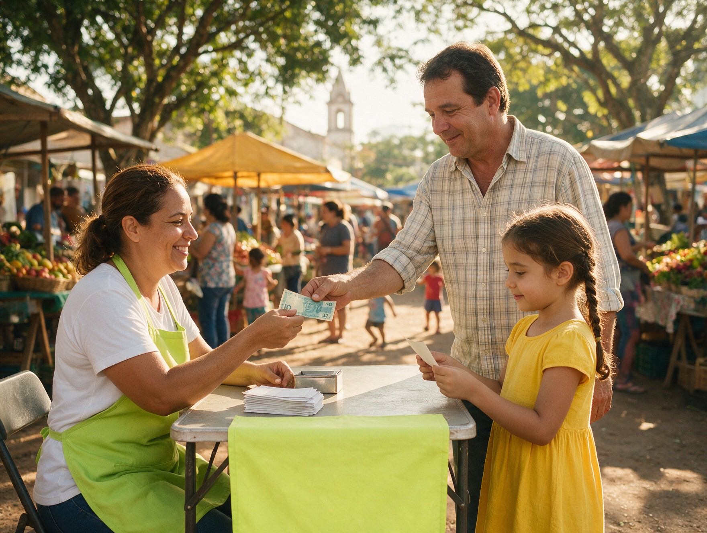
Pessoas da sociedade civil que vivem a realidade da região e podem apoiar a transformação local.
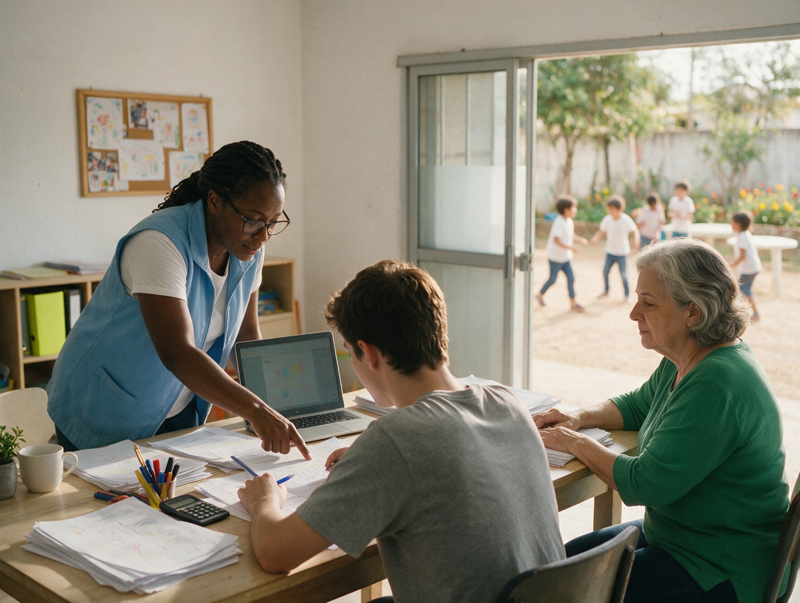
Organizações sociais que precisam de apoio para viabilizar e ampliar seu impacto.
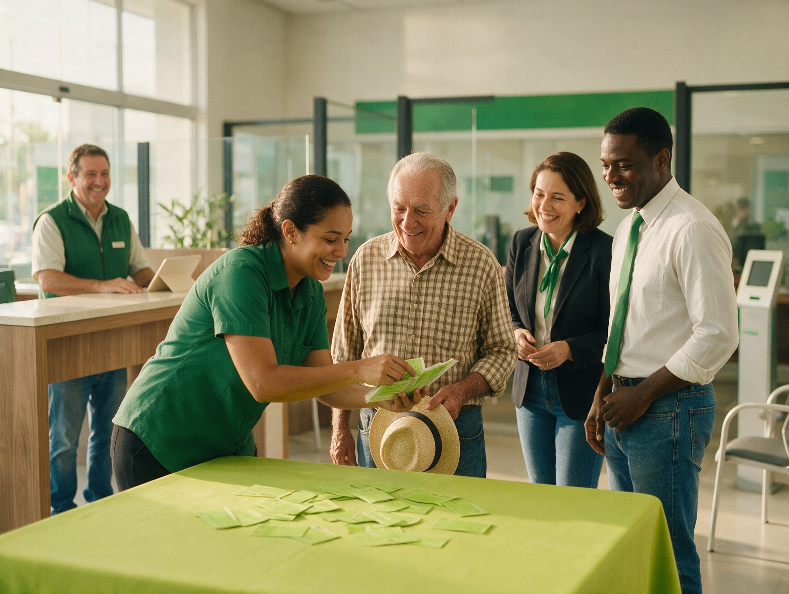
Pessoas que fazem a campanha acontecer de dentro para fora.
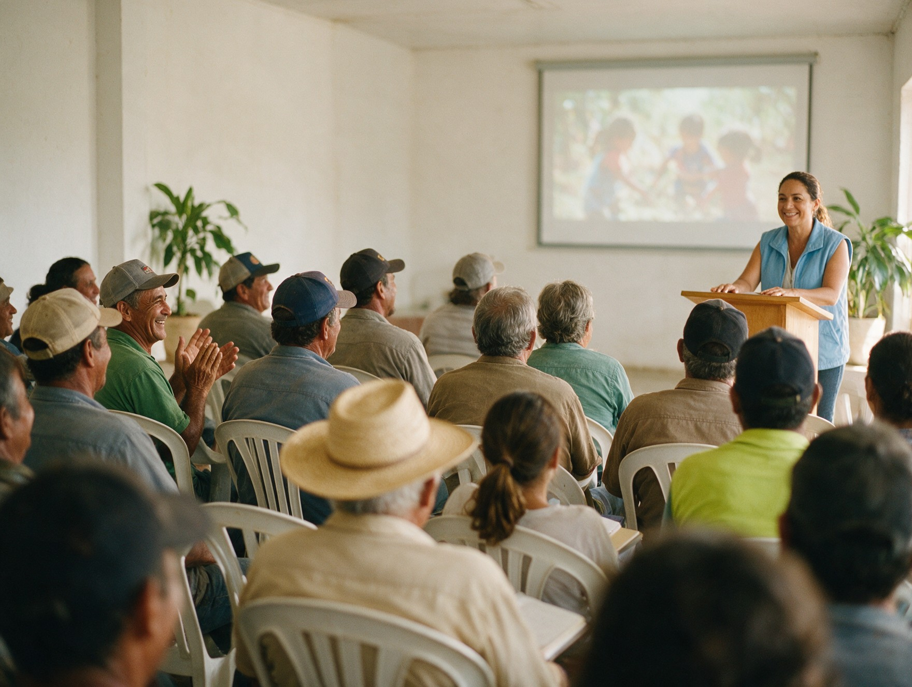
Pessoas que já fazem parte da cooperativa, mas nem sempre percebem o impacto social que ajudam a gerar.
Esse público é formado pela comunidade em geral — pessoas que vivem e/ou são impactadas pelas ações que a Campanha União Solidária ajuda a viabilizar. Em muitos casos, enxergam o ato de ajudar como algo trabalhoso, distante ou com pouco resultado prático. Ao mesmo tempo, são expostas diariamente aos problemas da sociedade, mas nem sempre têm acesso claro às soluções, conquistas e transformações geradas pelo cooperativismo em sua própria região.
Por isso, esse público precisa ser sensibilizado de forma constante. A comunicação deve aproximar a causa do cotidiano, mostrar projetos reais, evidenciar resultados concretos e despertar um sentimento de participação. Mais do que pedir apoio, é preciso fazer essa pessoa perceber que sua contribuição é simples, acessível e capaz de gerar impacto verdadeiro na comunidade onde ela vive.
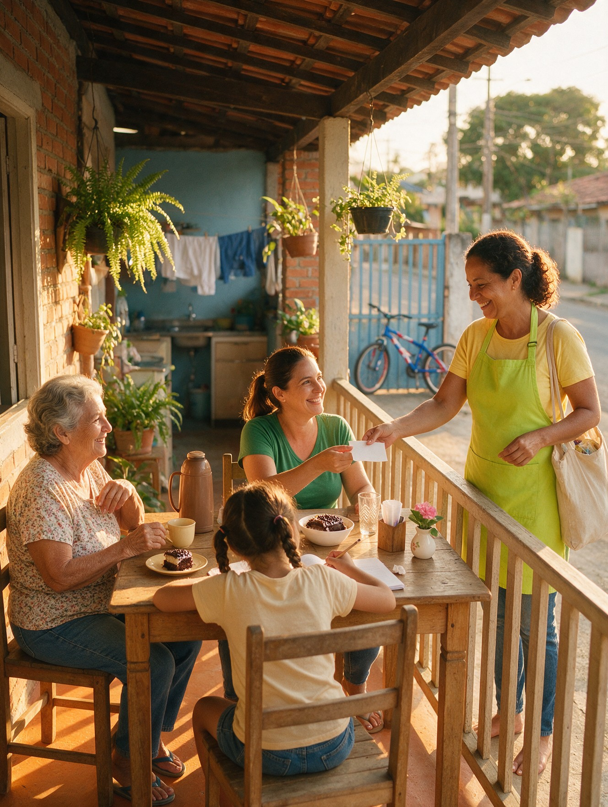
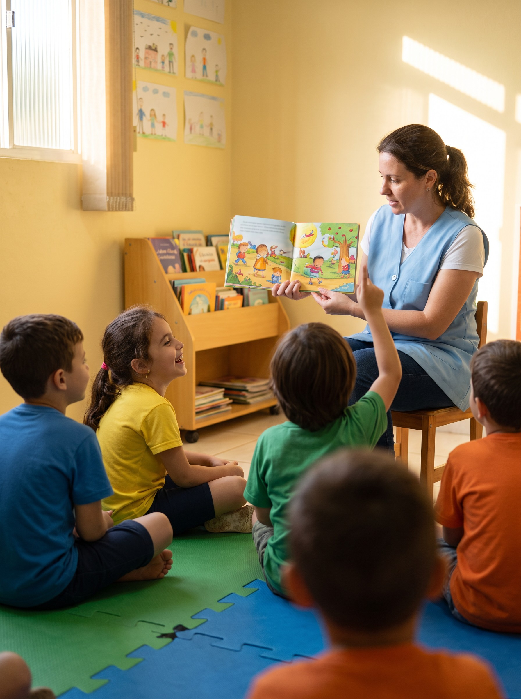
Esse público é formado pelas entidades sem fins lucrativos que atuam nas regiões contempladas pela Campanha União Solidária e que desenvolvem projetos de relevância social. São organizações que conhecem profundamente as necessidades da comunidade e já realizam um trabalho importante, mas que muitas vezes enfrentam limitações de recursos para sustentar, expandir ou qualificar suas ações.
Para essas entidades, a campanha representa uma oportunidade de transformar necessidade em mobilização e projeto em arrecadação. A comunicação deve reforçar que a Campanha União Solidária é uma ponte entre a causa e a comunidade, oferecendo visibilidade, credibilidade e uma mecânica capaz de potencializar a captação de recursos. Mais do que convidar a participar, é preciso mostrar que a campanha fortalece o trabalho da entidade e amplia sua capacidade de transformação.
Esse público é formado pelos colaboradores da Sicredi Dexis, Cocamar e Canal Verde, que vivenciam diariamente o cooperativismo e têm papel fundamental na realização da Campanha União Solidária. Justamente por estarem imersos nessa rotina, podem acabar automatizando processos e perdendo, no dia a dia, a conexão mais viva com os princípios e com o impacto social que sustenta esse trabalho.
Por isso, precisam ser constantemente reconectados ao propósito. A comunicação com esse público deve reforçar seu papel como agentes de transformação, valorizando sua participação, mostrando os resultados gerados e despertando orgulho por fazer parte de algo maior. Mais do que informar, é preciso reacender neles a consciência de que o social não é um complemento da rotina, mas uma parte essencial do cooperativismo e da própria campanha.
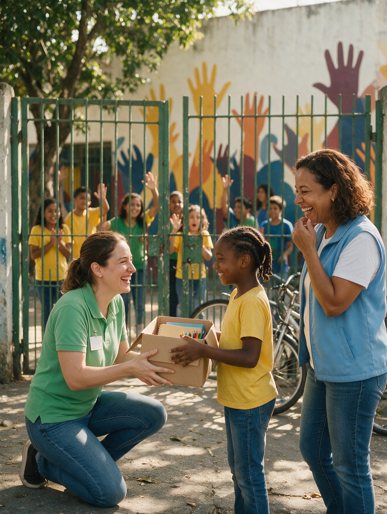
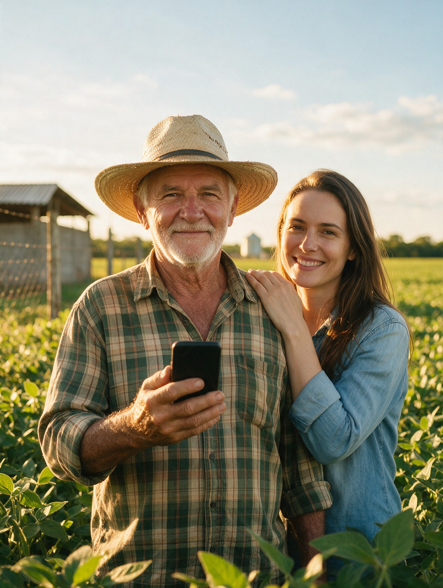
Esse público é formado pelos associados da cooperativa, que, de forma direta ou indireta, também apoiam a Campanha União Solidária. Embora já estejam conectados ao universo cooperativista, nem sempre são impactados pela campanha ou compreendem com clareza a dimensão social das ações viabilizadas por ela.
Essa distância enfraquece a percepção de um dos principais diferenciais da cooperativa: sua capacidade de gerar impacto positivo na comunidade por meio da ação coletiva. Por isso, a comunicação com esse público deve aproximá-lo da Campanha União Solidária, evidenciando resultados, causas apoiadas e transformações concretas geradas no território. Mais do que informar, é preciso fazer com que os associados percebam que também fazem parte desse movimento. O objetivo é ampliar seu conhecimento sobre a campanha, fortalecer o vínculo com essa frente de atuação e estimular uma participação mais consciente, próxima e engajada.
| Canal | Papel em 2027 | Status |
|---|---|---|
| Entidades, projetos, resultados e mobilização | Mantém | |
| Site | Cadastro, acesso da entidade e captação de contatos com pop-up | Ajusta |
| Conduz a entidade ao cadastro no site | Ajusta | |
| Newsletter | Entidades e compradores/apoiadores, ligada ao editorial | Novo |
| YouTube | Playlists: depoimentos, histórias, tutoriais e institucionais | Novo |
| Mídia paga e offline | Alcançar a comunidade, com conteúdos de impacto | Mantém |
| TikTok | Avaliar abertura e operação antes de virar canal fixo | A confirmar |
| Influenciadores | Sem frente prioritária até haver novo modelo validado | Pausa |
O perfil continua sendo vitrine dos projetos, resultados e mobilização de quem atua na ponta. A comunidade é alcançada também por mídia paga, offline e conteúdos de impacto.
Projetos, rotinas e resultados contados pelas próprias entidades.
Chamadas para vender cupons, participar e acompanhar a campanha.
Números locais, antes e depois, histórias reais e depoimentos.
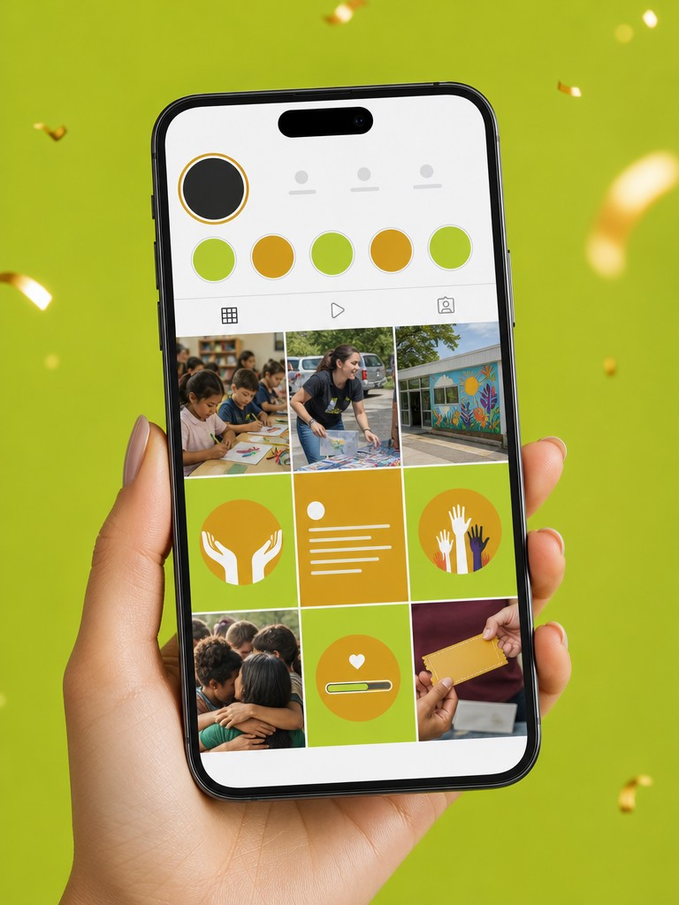
Conectada ao editorial da campanha, com atualizações, projetos participantes e captação de contatos via pop-up no site.
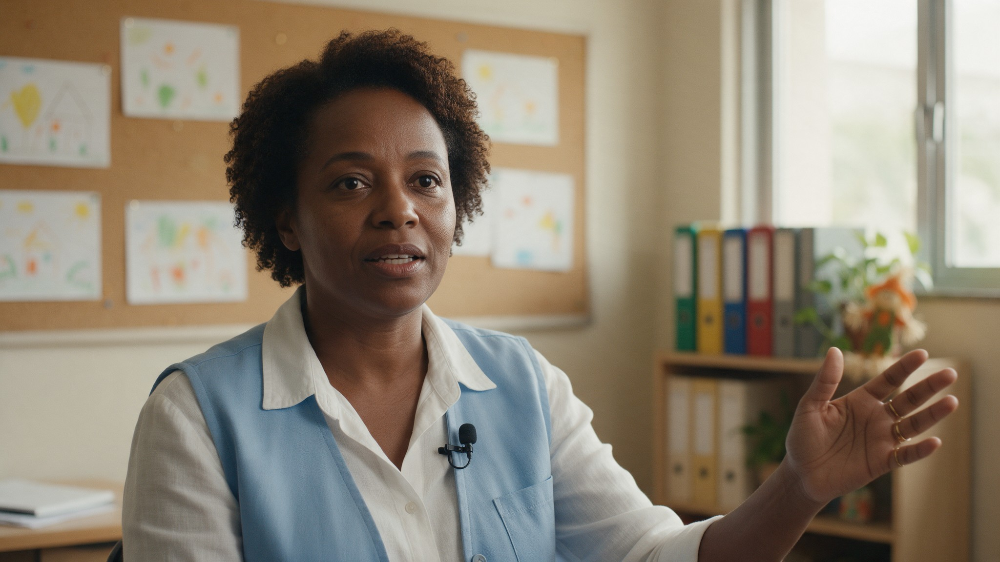
Quem vive a campanha, em primeira pessoa.
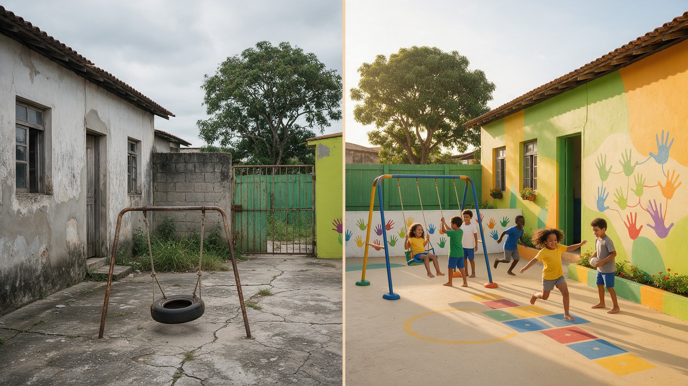
Antes e depois, projetos e conquistas.
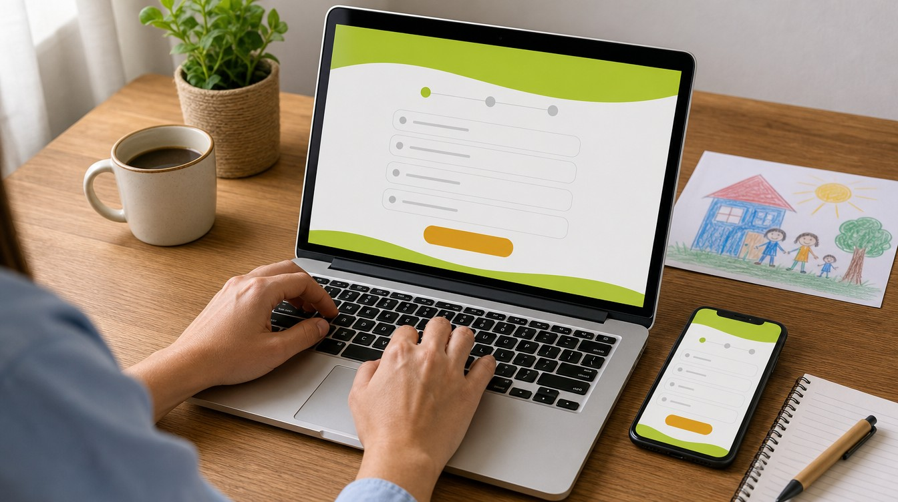
Como a entidade usa o novo sistema.
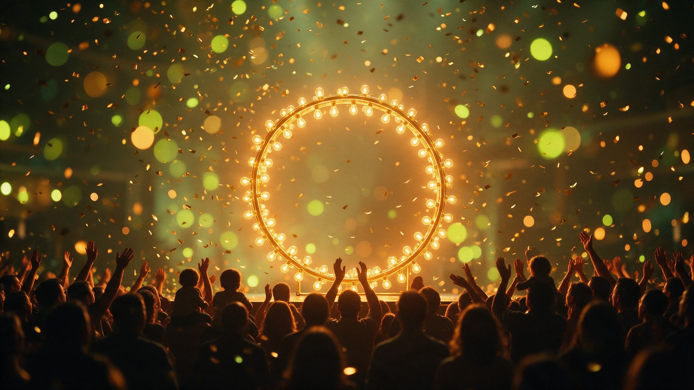
Vídeo dos 10 anos e apresentações de resultados.
Avaliar a abertura e a operação do canal antes de incorporá-lo como canal fixo da campanha.
Não são frente prioritária. A iniciativa anterior teve baixa efetividade, e só voltam com um novo modelo validado.
Entrevistas com gerentes das cidades.
Cidades-chave. Em 2026: Maringá, Paranavaí e Piracicaba.
Verba ampliada, com conteúdos de impacto.
Área de atuação do Dexis Instituto, Instituto Cocamar e Canal Verde. As praças de mídia de 2027 e a verba serão definidas a partir das cidades-chave.
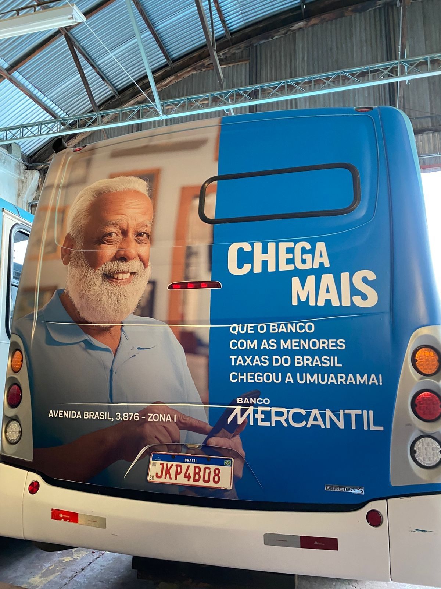
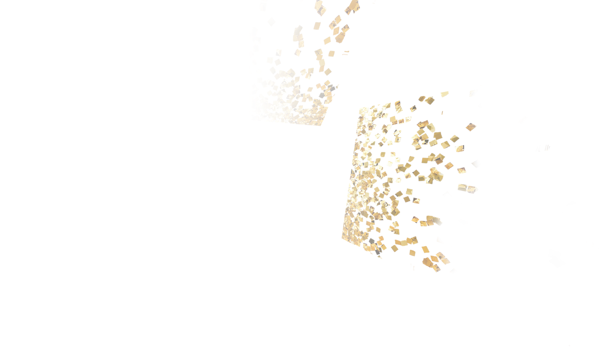
Cada conexão tem objetivo, jeito de acontecer, frentes e resultado esperado.
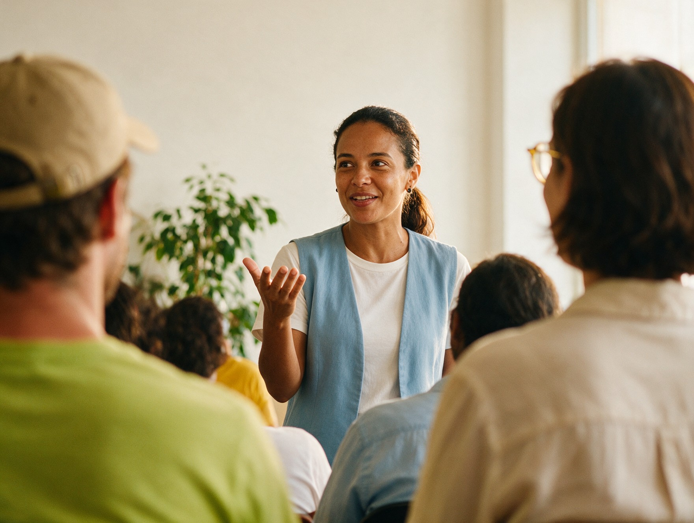
Mostrar que também fazem parte do impacto.
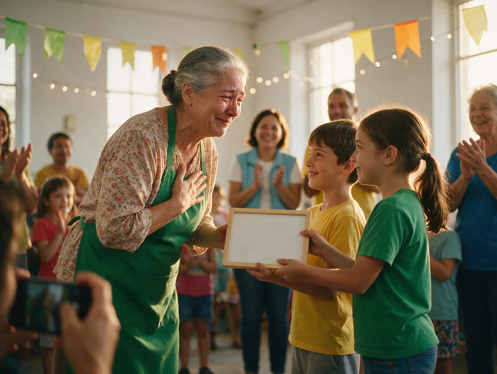
Reconhecer quem já faz a diferença.
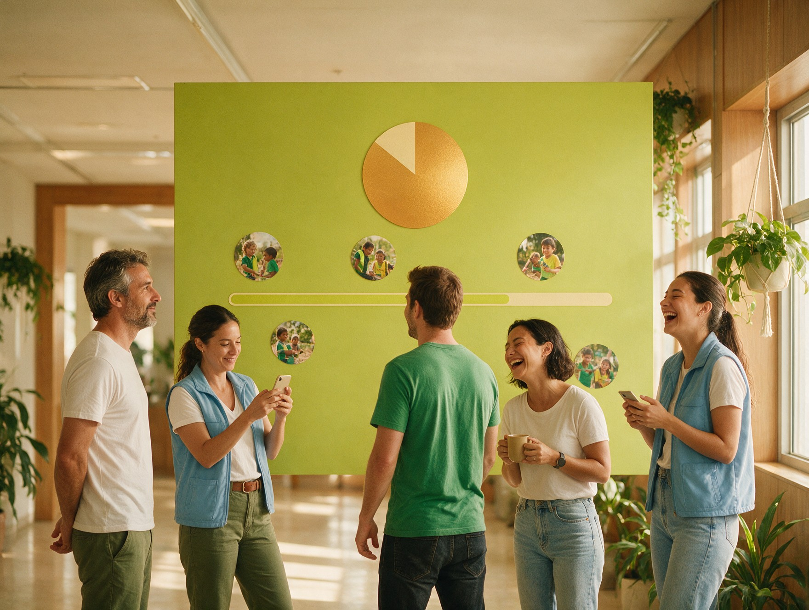
Manter a campanha viva por dentro.
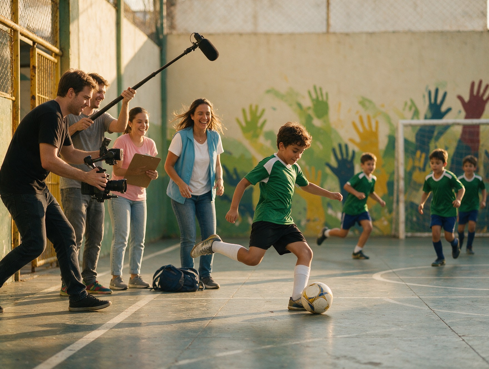
Aproveitar o acervo e captar com critério.
Aproximar os associados da Campanha União Solidária, mostrando que eles também fazem parte desse impacto por meio da cooperativa. A ideia é reforçar pertencimento, dar visibilidade aos resultados locais e tornar mais claro o valor social gerado pela campanha em cada cidade.
Criar espaços dentro de eventos já realizados pelo Sicredi com associados para apresentar a campanha, compartilhar os resultados alcançados no município e trazer entidades beneficiadas para contar, em primeira pessoa, como esse apoio se transforma em impacto real na comunidade.
Ampliar o conhecimento dos associados sobre a campanha, fortalecer seu vínculo com a causa e aumentar a percepção de que eles também contribuem para a transformação social gerada pela cooperativa.
Celebrativo, para abrir eventos e assembleias.
Números da campanha, prontos para adaptar por cidade.
Já previstos, com a identidade do KV 2027.
Para o início de 2027: evoluir o histórico de arrecadação por município e agência e um arrecadômetro mais utilizável.
TV, totem, cartaz atualizado ou painel digital.
De onde vêm os dados e quando atualizam.
Um modelo visual único para todas as agências.
Primeiro em agências-piloto, depois nas demais.
Fortalecer a conexão da Campanha União Solidária com a comunidade por meio do reconhecimento de pessoas que já contribuem com as entidades e com a transformação social no território.
Desenvolver uma campanha de reconhecimento e premiação para voluntários, com indicações realizadas pelas próprias entidades, valorizando histórias reais de dedicação e mobilização social. A iniciativa pode acontecer em formato on-line e off-line, criando um movimento de engajamento em torno de quem faz a diferença no dia a dia das causas.
Gerar maior proximidade com a comunidade, ampliar o reconhecimento público da campanha e valorizar pessoas que ajudam a transformar a realidade local ao lado das entidades.
Depende de confirmação: a comunicação do reconhecimento só se desdobra depois de confirmadas as regras, os prêmios e os critérios.
Fortalecer o engajamento interno com a Campanha União Solidária, reforçando para os colaboradores a relevância do seu papel e o impacto concreto gerado por essa mobilização.
Criar uma rotina de comunicação interna voltada às conquistas da campanha, compartilhando resultados, histórias das entidades e conteúdos que aproximem os colaboradores do propósito social da iniciativa.
Aumentar o sentimento de pertencimento dos colaboradores, manter a campanha viva no ambiente interno e fortalecer a percepção de que eles são parte essencial dessa transformação.
Qualificar a narrativa da Campanha União Solidária por meio de vídeos e imagens das entidades, fortalecendo a forma como seus projetos são apresentados em todos os canais.
Reaproveitar e recortar o acervo já captado e, quando houver escopo e demanda validados, captar novos conteúdos durante as visitas às entidades, registrando espaços, projetos, rotinas e histórias reais de impacto.
Elevar a qualidade da comunicação da campanha, dar mais visibilidade ao trabalho das entidades e criar um acervo de conteúdos capaz de fortalecer o impacto da narrativa em todos os pontos de contato.
Conduz a entidade ao site. Sem registro direto pelo aplicativo.
Acesso simplificado e responsivo.
Separada do painel administrativo.
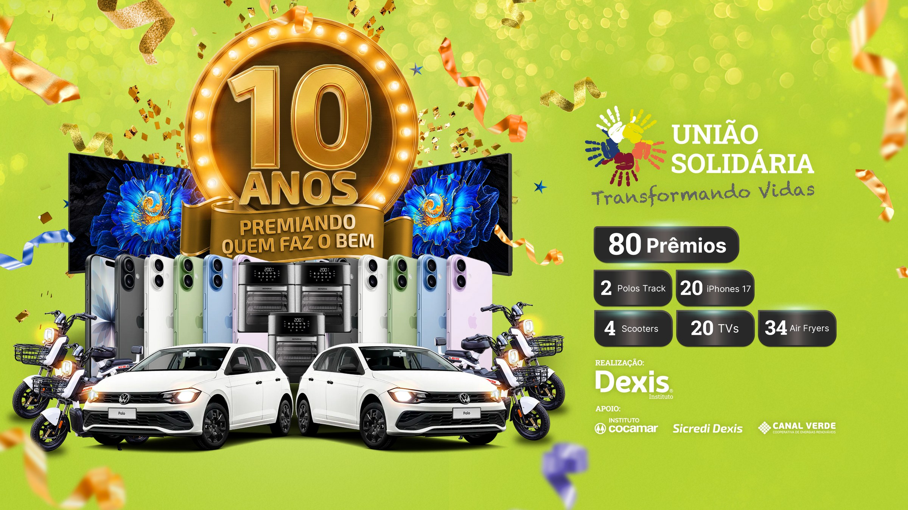
Execução dos projetos: até 3 meses após o fim da campanha. As datas de 2027 valem até o edital 2027 sair.
| Marco | 2026 | 2027 |
|---|---|---|
| Cadastro de entidades e projetos | 12/01 a 31/03 | 11/01 a 31/03 |
| Vendas e cadastro de cupons | 12/01 a 25/11 | 11/01 a 25/11 |
| Sorteios quinzenais | 07/03 a 14/11 | 06/03 a 13/11 |
| Sorteio final | 28/11 | 27/11 |
| Lançamentos só p/ prestação de contas e devolução de cupons | até 12/12 | até 11/12 |
| Repasse das vendas on-line | jan/2027 | jan/2028 |
| Execução dos projetos | até 3 meses após o fim da campanha | |
Meta de arrecadação 2027. Em 2026, o parcial até aqui é de R$ 7.546.220.
Metas numéricas de cada indicador entram na versão final.
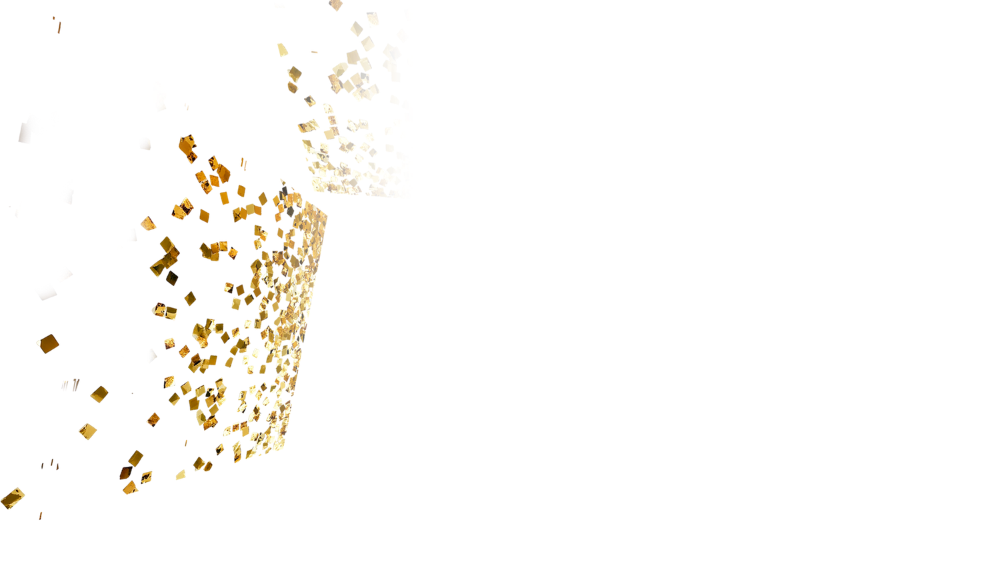